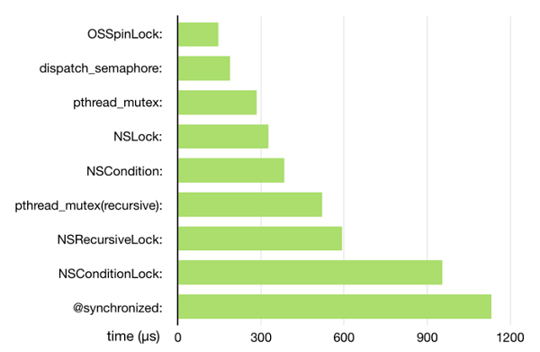

本篇内容
1. 死锁
2. 异步与同步概念
3. 串行与并发概念（重点）
4. dispatch_group
5. dispatch_barrier_async
6. 信号量
6. dispatch_source(重点)
简介
在单核的CPU里，采用分时的执行，来回在不同线程之间进行切换。在多核的CPU里可以同时多个线程，也可以切换线程。这样就实现多线程。
多线程带来的问题
数据竞争：多个线程更新相同的资源
死锁：线程之间相互等待
消耗大量内存：太多线程会消耗大量内存
死锁
在GCD中，以同步分发的方式非常容易出现死锁。死锁的本质资源的相互等待。异步调用不会产生死锁。
dispatch_queue_t queueA;
dispatch_sync(queueA, ^{
dispatch_sync(queueA, ^{
[self foo];
});
});
/*
一旦进入第二个dispatch_sync就会死锁
它们两个在同一个线程里执行外面的正在执行，第二个会等待外面的执行完，而第二个永远都不会执行完。
*/
队列
同步队列只是在执行任务时，顺序的从对列里去任务。在一个任务没有完时不会执行下一个任务。
并发队列是执行任务时，在一个任务没有执行完，可以去拿另一个任务去找线程执行。
异步
异步操作有开启线程的权利。
同步操作没有开启线程的权利。
不同执行方式在不同的队列里执行
同步异步在并发串行队列里的四种组合
同步与异步决定是否开启线程
串行与并发决定拿任务方式
任务时需要线程去执行的。也就时需要考虑，有线程没任务，有任务没线程去执行的情况。
- 同步执行 串行队列 因为是同步，不会从线程池里拿线程执行，会在当前线程里执行下一个任务（要在当前任务执行完后）。即若果在主线程里同步执行任务。会出现死锁。
/*
死锁
*/
dispatch_queue_t queue = dispatch_get_main_queue();
dispatch_sync(queue, ^{
NSLog(@"%@",[NSThread currentThread]);
});
- (void)gcdDemo1 {
//1.创建串行队列
dispatch_queue_t q = dispatch_queue_create("demo1_seral", DISPATCH_QUEUE_SERIAL);
//2.同步执行任务
for (int i =0; i< 20; i++) {
dispatch_sync(q, ^{
NSLog(@"demo1 %@",[NSThread currentThread]);
});
}
}
- 同步执行 并发队列 因为是同步，不会开启线程，因为是并发队列，拿任务可以并发，但没有线程执行，所有还是一个一个执行
//1.创建串行队列
dispatch_queue_t q = dispatch_queue_create("demo4_seral", DISPATCH_QUEUE_CONCURRENT);
//2.同步执行任务
for (int i =0; i< 20; i++) {
dispatch_sync(q, ^{
NSLog(@"demo3+%@, %@",@(i),[NSThread currentThread]);
});
}
NSLog(@"come here");
- 异步执行 串行队列 因为是异步，可以去线程池里拿线程执行。当前是串行队列，要等一个任务执行完后才去拿下一个任务。所以还是一个一个执行
- (void)gcdDemo2 {
//1.创建串行队列
dispatch_queue_t q = dispatch_queue_create("demo2_seral", DISPATCH_QUEUE_SERIAL);
//2.同步执行任务
for (int i =0; i< 20; i++) {
dispatch_async(q, ^{
NSLog(@"demo2+%@, %@",@(i),[NSThread currentThread]);
});
}
NSLog(@"come here");
}
- 异步执行 并发队列 因为是异步，可以去线程池中拿线程执行。当前是并发队列。当前任务没有执行完可以去拿下一个任务执行，因为是并发，可以从线程池里拿新的线程去执行这个任务。这时就真正实现了幷发执行。
- (void)gcdDemo3 {
//1.创建串行队列
dispatch_queue_t q = dispatch_queue_create("demo3_seral", DISPATCH_QUEUE_CONCURRENT);
//2.同步执行任务
for (int i =0; i< 20; i++) {
dispatch_async(q, ^{
NSLog(@"demo3+%@, %@",@(i),[NSThread currentThread]);
});
}
NSLog(@"come here");
}
- 应用（如果将这个例子理解了，就真正理解的同步异步执行与串行并发对列） 指定一个同步任务，让所有异步任务等待同步任务执行完后才执行。 解决方法： 在一个并发队列里先执行加入这个同步任务，在加入后面两个异步任务。因为是同步任务在前，不会有开启多余的线程去执行后面的任务。当第一个执行完，执行到第二个时候，是异步的，可以开启线程执行其他的，因为是并发队列，第三个任务有线程可以用来执行。
- (void)gcdDemo6 {
dispatch_queue_t loginQueue = dispatch_queue_create("rao-login-queue", DISPATCH_QUEUE_CONCURRENT);
void (^task)(void) = ^(){
dispatch_sync(loginQueue, ^{
NSLog(@"用户登录了%@",[NSThread currentThread]);
});
dispatch_async(loginQueue, ^{
NSLog(@"用户支付了%@",[NSThread currentThread]);
});
dispatch_async(loginQueue, ^{
NSLog(@"用户下载了%@",[NSThread currentThread]);
});
};
dispatch_async(loginQueue, task);
}
dispatch group
使用场景：在一个对列里并发执行完后，想执行一个操作，就可以用dispatch_group
dispatch_queue_t queue = dispatch_queue_create("rao-queue", DISPATCH_QUEUE_CONCURRENT);
dispatch_group_async(group, queue, ^{
NSLog(@"down load1%@",[NSThread currentThread]);
});
dispatch_group_async(group, queue, ^{
NSLog(@"down load2%@",[NSThread currentThread]);
});
dispatch_group_async(group, queue, ^{
NSLog(@"down load3%@",[NSThread currentThread]);
});
//当前面的所有
dispatch_group_notify(group, queue, ^{
NSLog(@"所有的都执行完%@",[NSThread currentThread]);
});
//在主队列里进行更新
dispatch_group_notify(group,dispatch_get_main_queue(), ^{
NSLog(@"所有的都执行完%@",[NSThread currentThread]);
});
dispatch_barrier_async
dispatch_barrier_async等待之前追加的任务执行完后，就会执行这个任务，并且不会执行下一个任务，要等这个任务执行完后，才会并发执行下一个任务。
- (void)viewDidLoad {
[super viewDidLoad];
dispatch_queue_t queue = dispatch_queue_create("label", DISPATCH_QUEUE_CONCURRENT);
static NSInteger readCount = 0;
void(^read)(void) = ^() {
NSLog(@"这是read%@",@(readCount));
};
void(^write)(void) = ^(){
readCount++;
NSLog(@"这是write%@",@(readCount));
};
dispatch_async(queue, read);
dispatch_async(queue, read);
dispatch_async(queue, read);
dispatch_async(queue, read);
dispatch_barrier_async(queue, write);
dispatch_async(queue, read);
dispatch_async(queue, read);
}
信号量
NSMutableArray是线程不安全的，当有多个线程同时对数组进行操作的时候可能导致崩溃或数据错误。这里采用的就时信号量，所谓信号量，可以理解成一个数，占有空间时+1，走开始-1；
- (void)viewDidLoad {
[super viewDidLoad];
//并发写入数据
dispatch_queue_t queue = dispatch_get_global_queue(DISPATCH_QUEUE_PRIORITY_HIGH, 0);
dispatch_semaphore_t semaphore = dispatch_semaphore_create(1);//创建信号量
NSMutableArray *array = [[NSMutableArray alloc]init];
for (int i = 0 ; i<1000; i++) {
dispatch_async(queue, ^{
dispatch_semaphore_wait(semaphore, DISPATCH_TIME_FOREVER);//减少信号量
[array addObject:@(i)];
});
dispatch_semaphore_signal(semaphore);//提高信号量
}
锁
锁的部分参考深入理解iOS开发中的锁

本图来自ibireme
- OSSpinLock
自旋锁的实现原理比较简单，就是死循环。当a线程获得锁以后，b线程想要获取锁就需要等待a线程释放锁。在没有获得锁的期间，b线程会一直处于忙等的状态。如果a线程在临界区的执行时间过长，则b线程会消耗大量的cpu时间，不太划算。所以，自旋锁用在临界区执行时间比较短的环境性能会很高。
dispatch_semaphore
dispatch_semaphore实现的原理和自旋锁有点不一样。首先会先将信号量减一，并判断是否大于等于0，如果是，则返回0，并继续执行后续代码，否则，使线程进入睡眠状态，让出cpu时间。直到信号量大于0或者超时，则线程会被重新唤醒执行后续操作。pthread_mutex
pthread_mutex表示互斥锁，和信号量的实现原理类似，也是阻塞线程并进入睡眠，需要进行上下文切换。NSLock
NSLock在内部封装了一个 pthread_mutex，属性为 PTHREAD_MUTEX_ERRORCHECK。NSCondition
NSCondition封装了一个互斥锁和条件变量。互斥锁保证线程安全，条件变量保证执行顺序。NSRecursiveLock
递归锁，pthread_mutex(recursive)的封装。@synchronized：
一个对象层面的锁，锁住了整个对象，底层使用了互斥递归锁来实现。
事件源
Runloop里我们说过source_t的概念，其实与队列的源是相同的。Runloop提供对源的监控。队列也可以实现对源的监控。且都可以创建自定义源。
理解：dispatch都是主动添加任务到队列中，然而当系统事件发生时，我们希望做一定的工作当监听到系统事件后就会触发一个任务，并自动将其加入队列执行，这里与之前手动添加任务的模式不同，一旦将Diaptach Source与Dispatch Queue关联后，只要监听到系统事件，Dispatch Source就会自动将任务（回调函数）添加到关联的队列中。（这个概念在监听系统事件时做一定的操作时是很有用处的！！！哈哈）
监听事件类型
Dispatch Source一共可以监听六类事件，分为11个类型，我们来看看都是什么：
DISPATCH_SOURCE_TYPE_DATA_ADD：属于自定义事件，可以通过dispatch_source_get_data函数获取事件变量数据，在我们自定义的方法中可以调用dispatch_source_merge_data函数向Dispatch Source设置数据，下文中会有详细的演示。
DISPATCH_SOURCE_TYPE_DATA_OR：属于自定义事件，用法同上面的类型一样。
DISPATCH_SOURCE_TYPE_MACH_SEND：Mach端口发送事件。
DISPATCH_SOURCE_TYPE_MACH_RECV：Mach端口接收事件。
DISPATCH_SOURCE_TYPE_PROC：与进程相关的事件。
DISPATCH_SOURCE_TYPE_READ：读文件事件。
DISPATCH_SOURCE_TYPE_WRITE：写文件事件。
DISPATCH_SOURCE_TYPE_VNODE：文件属性更改事件。
DISPATCH_SOURCE_TYPE_SIGNAL：接收信号事件。
DISPATCH_SOURCE_TYPE_TIMER：定时器事件。
DISPATCH_SOURCE_TYPE_MEMORYPRESSURE：内存压力事件。
- timer_source 示例
dispatch_queue_t queue = dispatch_queue_create("queue", DISPATCH_QUEUE_CONCURRENT);
dispatch_source_t timer = dispatch_source_create(DISPATCH_SOURCE_TYPE_TIMER, 0, 0,queue);
if(time){
dispatch_source_set_timer(timer, dispatch_walltime(NULL, 0), 1, 1);
dispatch_source_set_event_handler(timer, ^{
});
dispatch_resume(timer);
}
- 监听度文件读事件
dispatch_source_t processContentsOfFile(const char *fileName) {
//prepare the file for reading
int fd = open(fileName,O_RDONLY);
if(fd == -1){
return NULL;
}
fcntl(fd,F_SETFL,O_NONBLOCK);
dispatch_queue_t queue = dispatch_get_global_queue(DISPATCH_QUEUE_PRIORITY_DEFAULT, 0);
dispatch_source_t readSource = dispatch_source_create(DISPATCH_SOURCE_TYPE_READ, fd, 0, queue);
if(!readSource){
close(fd);
return NULL;
}
dispatch_source_set_event_handler(readSource, ^{
});
return nil;
}
取消dispatch_source
当设置了Dispatch source对象将一直保持有效状态，除非手动调用dispatch_source_cancel函数来取消它。但取消了dispatch source对象后，将不能再接收到新的事件
暂停与恢复dispatch_source
可以通过使用dispatch_suspend和 dispatch_resume函数来暂停和恢复事件传递给dispatch source对象